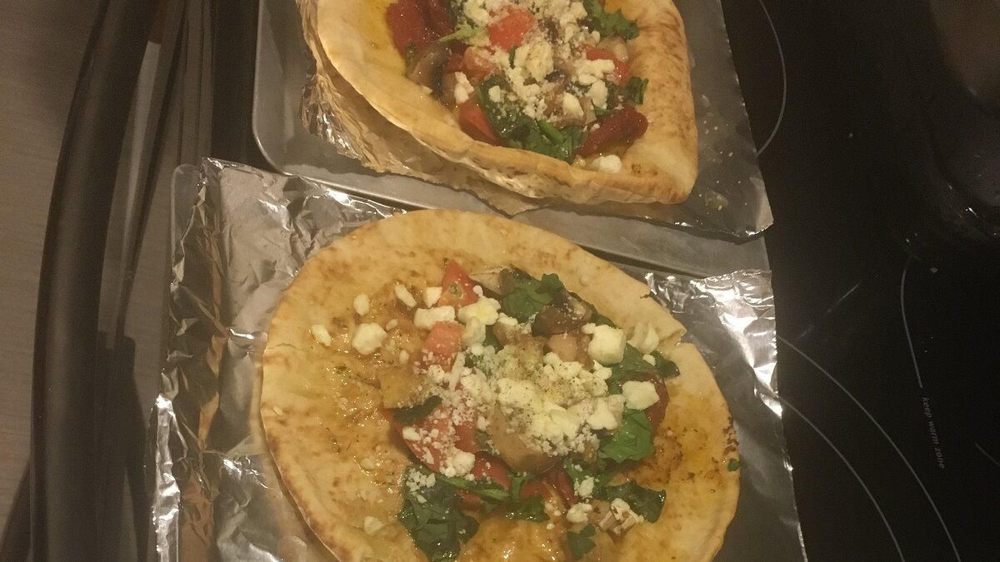

Spinach and Feta Pita
Homepage

A delightful experience that will take you to the European seasides in mere seconds!
Ingredients:
- 1 (6 ounce) tub sun-dried tomato pesto
- 6 (6 inch) whole wheat pita breads
- 2 roma (plum) tomatoes, chopped
- 1 bunch spinach, rinsed and chopped
- 4 fresh mushrooms, sliced
- ½ cup crumbled feta cheese
- 2 tablespoons grated Parmesan cheese
- 3 tablespoons olive oil
- ground black pepper to taste
Instructions:
-
Preheat the oven to 350 degrees F (175 degrees C).
-
Spread tomato pesto onto one side of each pita bread and place them pesto-side up on a baking sheet.
-
Top pitas with tomatoes, spinach, mushrooms, feta cheese, and Parmesan cheese; drizzle with olive oil and season with pepper.
-
Bake in the preheated oven until pita breads are crisp, about 12 minutes. Cut pitas into quarters.
Nutritional facts:
| Calories: |
350 |
| Protein: |
11.6g |
| Carbohydrates: |
41.6g |
| Fat: |
17.1g |
| Sodium: |
587.1mg |
Homepage